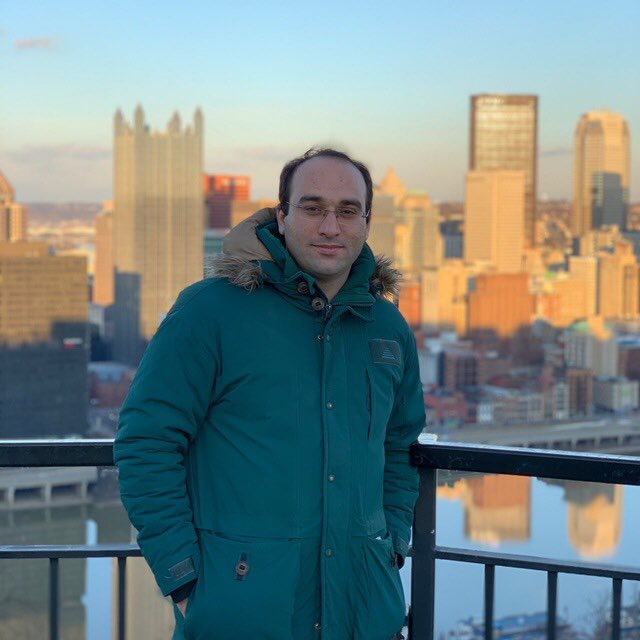

I’m PhD Candidate in the Statistics Department and Graduate Student in the Mathematics Department at the University of Illinois Urbana-Champaign. I work under supervision of Ruoqing Zhu, Douglas G Simpson and Qi Zheng. I was also a research fellow at the Bioacoustics Research Laboratory at the University of Illinois Department of Electrical and Computer Engineering.
Before joining UIUC, I was a PhD student in the Economics Department at the Pennsylvania State University and I did my Master’s in Economics in the Economics Department at the University of Bologna, Italy.
